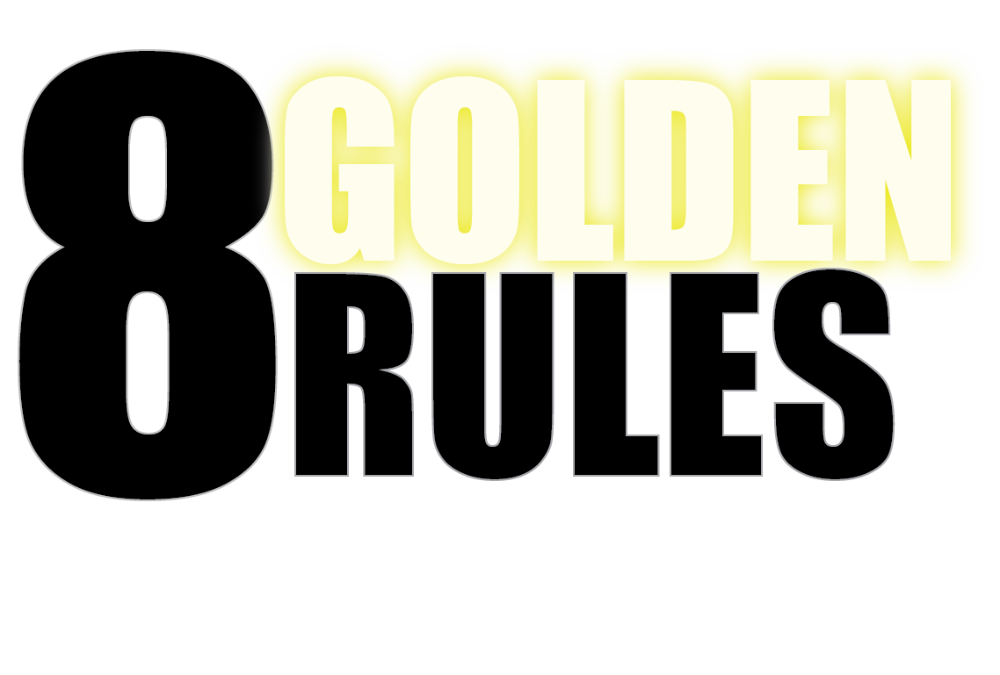

Login
Home
Quiz
8 Golden Rules
Examples
Contact
Meet the Team
1: Most text editing applications allow key combinations to quickly copy, paste, cut, undo, etc. What rule describes these features?
Enable Frequent Users to Use Shortcuts
Permit Easy Reversal of Actions
Reduce Short Term Memory Load
Strive for Consistency
2: If a user clicks on a button and doesn't know if clicking on the button has actually activated the button's function, which rule has not been followed?
Offer Simple Error Handling
Design Dialogue to Yield Closure
Support Internal Locus of Control
Offer Informative Feedback
3: When designing how many icons should be on a website at the same time, how should you decide how many options to give the user at one time, given multiple options are needed?
1
around 5
around 15
500
4: A textbox pops up and tells the user that the delete button they pressed has successfully deleted something. Which rule does this follow?
Permit Easy Reversal of Actions
Offer Simple Error Handling
Offer Informative Feedback
Design Dialogue to Yield Closure
5: A website has a page with massive text and a desaturated blue blackground. Another page has multiple vibrant colors and lots of small paragraphs to explain the page. What rule is not being followed?
Enable Frequent Users to Use Shortcuts
Offer Informative Feedback
Strive for Consistency
Reduce Short Term Memory Load
6: When designing error messages for the user, what should be output to the website for the user to know?
A custom message that most users will understand, describing what went wrong, whether the user or website caused it, and a suggestion to fix it
The exact error that was printed to console
A message that says "something went wrong"
Nothing, the user can see what went wrong
7: A website meant for creating images only allows user to place visual elements on certain pixel intervals in relation to other elements and there is no way to turn this off. What rule is being ignored?
Strive for Consistency
Support Internal Locus of Control
Enable Frequent Users to Use Shortcuts
Reduce Short Term Memory Load
8: What describes the easy reversal of actions golden rule?
A user can press a 2 key combination to quickly undo a deletion
A user must go through customer service to get an employee to look into the website's update history to get its state restored
A user cannot delete anything, allowing them to would be dangerous
A user accidently deleted something, and now must recreate it from scratch
9: How can you reduce short term memory load if the user has a lot of options?
Keep all the options there if they are important
Remove important options so the user does not get confused
Put some related options into a drop-down list rather than showing them all at once, or removing unneeded options
Use a tutorial to make the user understand everything before using the website
10: Some websites must prioritize different rules depending on their purpose. Which rule would be least important for an educational website for reading articles that allows for author contact and website navigation?
Design Dialogue to Yield Closure
Support Internal Locus of Control
Strive for Consistency
Reduce Short Term Memory Load